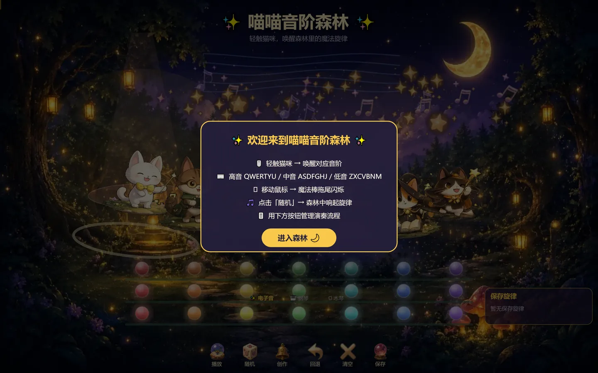
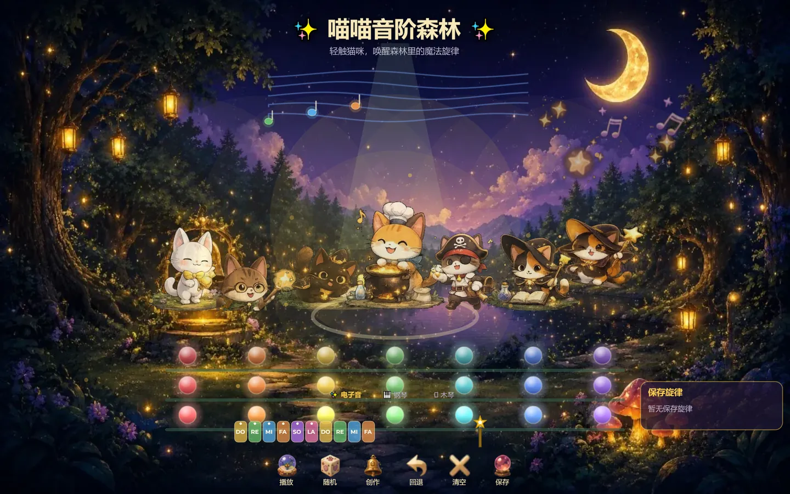

喵喵音阶森林
七个音阶，七只猫。敲键盘或者点猫就能发声，不用认识任何一个音符的名字。

它是什么
给「想碰音乐但怕学乐理」的人，做一个五分钟就能出声音的东西。
不用先学五线谱，也不用先买乐器。
把「发声」这件事的门槛，压到一次按键。
把音阶变成七个角色
每只猫守一个音阶，站在自己的睡莲叶上。敲到它就亮起来、有音效、有拖尾。 猫的形象和乐器性格是对应的——白猫轻、橘猫暖、黑猫闷——玩家在记住角色之前， 已经记住了它们的声音。
三种音色，一种弹法
电子音、钢琴、木琴随时切换。换音色不清空已经弹过的内容，同一段旋律换一种气质再听一遍—— 这是最便宜、也最容易被分享的「再玩一次」的理由。
键盘就是乐器
高音 Q W E R T Y U，中音 A S D F G H J，低音 Z X C V B N M。 三排按键对应三个八度，手放上去位置就固定了，不看屏幕也能弹。 鼠标移动时魔法棒会拖出光尾，让「我在演奏」这件事有实感。
从瞎点到存下来
播放、随机、创作、回退、清空、保存——六个动作覆盖从「随手点两下」到「存一段旋律」的全过程。 「随机」是给不会开始的人的示范：先听一段，再改它。保存则是把玩过的东西变成作品， 下次回来还在。
几个判断
做这个小东西时，取舍比功能多。
- 降低门槛，还是保留难度
- 不做任何乐理教学，也不做「弹对了才给分」。判断是先让人听到自己弄出来的声音， 有兴趣的人自然会去查什么是八度。
- 画面很满，交互就要极简
- 森林、星空、月亮、萤火已经占了大量注意力，所以交互层只剩两样东西：猫和发光的键位。 按钮全压在底部一条，不跟画面抢。
- 「随机」不是玩具，是教学
- 新手最大的问题是不知道怎么开始。随机给一段能听的旋律，玩家只要按回退、改一两个音， 就从消费者变成了作者。
- 保存要做得像收藏，不像存档
- 保存面板放在右侧，永远可见，写的是「保存旋律」而不是「保存进度」。 玩家存的不是状态，是一段自己想留下的东西。
界面实拍
三个状态：进来、在玩、在创作。


怎么做的
一个人做完视觉、交互和音频链路。
整体是一个 Canvas 应用：背景、猫、粒子分三层绘制，互不影响帧率。 音频用 Web Audio 实时合成而不是采样播放，按键到出声的延迟压到人感觉不到的程度—— 这一点在音乐类产品里不是优化项，是及格线。
素材处理和批量压缩用 Python 脚本跑，一次产出多种尺寸和格式， 保证首屏不用等大图。整个页面首屏控制在几秒内可交互。
验收标准只有一个：把手机横过来，随便按十下，必须每一次都有声音、有光、不卡。
说明：美术资源由 AI 生成并按统一调色处理，交互设计与音色搭配由我完成， 代码由 AI 协作实现。